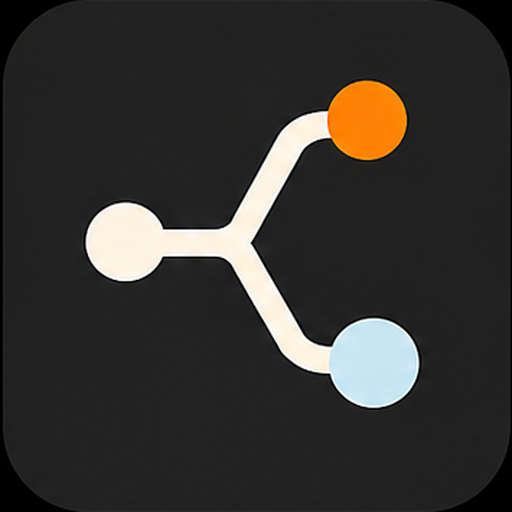

Assign a lane
Each agent receives a branch, worktree, role, and file scope before work starts.

Agent Operator KitOperator-owned agent workflow
Agent Operator Kit gives Codex, Claude Code, Cursor, and other agents the same operating surface: isolated worktrees, visible tmux lanes, external handoffs, and a clean repo.
tasks/slug/tasks/*.md -> handoffs/*.md
Agent-run setup
Open Codex, Claude Code, or Cursor in the target repo. The agent should inspect first, propose a lane map, install the kit, create the external workspace, and run a smoke check.
Set up Agent Operator Kit for the current repo.
Use this source kit:
git@github.com:Agent-Operator-Kit/operator-kit.git
First clone or read the kit, then follow its agent-run bootstrap guide:
templates/prompts/agent-run-bootstrap.md
docs/guides/agent-run-bootstrap.md
Treat the current working directory as the target project repo.
Requirements:
- inspect the repo first
- propose the lane map before creating worktrees
- install the scripts/templates
- install Codex, Claude Code, and Cursor project assets when relevant
- create the external operator workspace outside the repo
- create or verify worktrees without overwriting existing work
- start or inspect tmux
- create a smoke task
- run the status and summary checks
- report installed files, OPERATOR_DIR, lane map, smoke results, git status, and whether the repo is ready to commit
Guardrails:
- do not rewrite git history
- do not force-push
- do not commit secrets, raw handoffs, task packets, pane captures, or transient notes
- do not deploy or run production builds during setupOperating model
Each agent receives a branch, worktree, role, and file scope before work starts.
Task instructions are generated under the external operator workspace, not committed source.
Pane captures and agent summaries land beside the repo for review and later cleanup.
The operator reviews diffs, validation, and shared seams before anything lands on the stable branch.
Supported surfaces
Clean source history
The repo stores source, reusable scripts, and evergreen docs. Task packets, pane captures, raw handoffs, and temporary status notes stay in a sibling operator workspace.
~/Projects/acme/
code/
app/
app-backend/
app-ui/
operator/
README.md
tasks/
setup-smoke-001/
tasks/
handoffs/
captures/